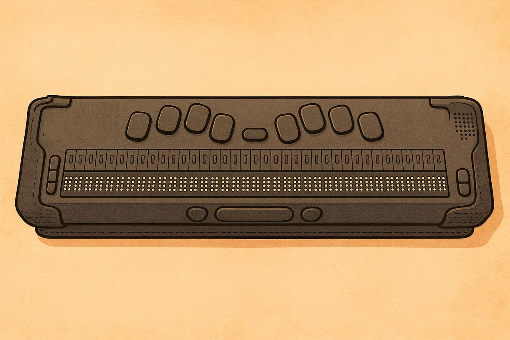

UEB 學習手冊
給初學者的統一英文點字（UEB）手冊：第一部分是英文字母、數字、大寫、標點符號和簡寫字，第二部分是各類縮寫，最後是綜合練習、相關輔助科技和縮寫快速查詢表。作者黃偉豪、陳英廷，PDF 版見視覺障礙輔助科技筆記本。

UEB 學習手冊⠠⠠⠥⠑⠃ ⠑⠦⠂⠑⠡⠂⠊⠷⠈⠚⠮⠐
Guide Book for Learning Unify English Braille
作者：黃偉豪
陳英廷
前言
在視覺障礙者的英語學習過程中，點字是連結文字與世界的重要橋梁。為了協助初學者循序漸進地掌握統一英文點字（Unified English Braille, 簡稱 UEB）的基本知識與應用技巧，本教材應運而生。
本書分為兩大部分，第一部分介紹 UEB 的基礎元素，包括英文字母、數字、大寫、標點符號以及簡寫字的概念，讓學習者從單一符號到簡單單詞，逐步熟悉點字的結構與邏輯。第二部分介紹 UEB 的各類縮寫規則，依據不同的縮寫類型加以分類說明，並搭配實例句子與練習活動，協助學習者理解並活用各種縮寫組合。
除了基本規則與實用練習，本書亦收錄點字與英文之互譯練習，以及常用的 UEB 點字轉譯工具與輔助科技，如 NVDA 螢幕報讀軟體與 BrailleBlaster 等，幫助學習者實際應用所學，無縫接軌至數位學習與文件製作。
特別感謝國立高雄師範大學特殊教育系李永昌教授、國立臺北教育大學特殊教育學系吳純慧副教授給予編修建議與指導。
第一部分：英文字母、數字與標點符號
英文字母 A 至 J
英文字母與點位
UEB 英文點字使用六點點字系統來表示英文字母。每個點字格由六個點位組成，這些點分為左右兩排，每排都有上、中、下三個點，左邊排的上、中、下為點 1、點 2、點 3 ，右邊排的上、中、下為 點 4、點 5、點 6。 A 至 J 的字母點位如下：
| 字母 | 點字符號 | 點位 |
|---|---|---|
| a | ⠁ | 點 1 |
| b | ⠃ | 點 1 2 |
| c | ⠉ | 點 1 4 |
| d | ⠙ | 點 1 4 5 |
| e | ⠑ | 點 1 5 |
| f | ⠋ | 點 1 2 4 |
| g | ⠛ | 點 1 2 4 5 |
| h | ⠓ | 點 1 2 5 |
| i | ⠊ | 點 2 4 |
| j | ⠚ | 點 2 4 5 |
練習單字
使用 A 至 J 字母組合成的簡單英文單字練習：
英文轉點字
| add | ⠁⠙⠙ | 添加 |
| age | ⠁⠛⠑ | 年紀 |
| bad | ⠃⠁⠙ | 壞的 |
| beef | ⠃⠑⠑⠋ | 牛肉 |
| big | ⠃⠊⠛ | 大的 |
| dad | ⠙⠁⠙ | 爸爸 |
| cab | ⠉⠁⠃ | 廂型車 |
| dig | ⠙⠊⠛ | 挖 |
點字轉英文
| ⠑⠙⠛⠑ | edge | 邊緣 |
| ⠑⠛⠛ | egg | 蛋 |
| ⠊⠉⠑ | ice | 冰 |
| ⠚⠁⠙⠑ | jade | 玉石 |
| ⠃⠁⠙⠛⠑ | badge | 徽章 |
| ⠉⠁⠛⠑ | cage | 籠子 |
| ⠋⠁⠉⠑ | face | 臉 |
| ⠓⠊⠙⠑ | hide | 隱藏 |
英文字母 K 至 T
英文字母與點位
繼續學習英文字母的點字表示， K 至 T 的字母點位如下：
| 字母 | 點字符號 | 點位 |
|---|---|---|
| k | ⠅ | 點 1 3 |
| l | ⠇ | 點 1 2 3 |
| m | ⠍ | 點 1 3 4 |
| n | ⠝ | 點 1 3 4 5 |
| o | ⠕ | 點 1 3 5 |
| p | ⠏ | 點 1 2 3 4 |
| q | ⠟ | 點 1 2 3 4 5 |
| r | ⠗ | 點 1 2 3 5 |
| s | ⠎ | 點 2 3 4 |
| t | ⠞ | 點 2 3 4 5 |
練習單字
使用 K 至 T 字母以及先前學過的 A 至 J 字母組合成的簡單英文單字練習：
英文轉點字
| kid | ⠅⠊⠙ | 孩子 |
| lid | ⠇⠊⠙ | 蓋子 |
| meet | ⠍⠑⠑⠞ | 遇見 |
| nod | ⠝⠕⠙ | 點頭 |
| orange | ⠕⠗⠁⠝⠛⠑ | 橘子 |
| pet | ⠏⠑⠞ | 寵物 |
| quit | ⠟⠥⠊⠞ | 退出 |
| run | ⠗⠥⠝ | 跑 |
點字轉英文
| ⠎⠊⠞ | sit | 坐下 |
| ⠞⠕⠏ | top | 頂部 |
| ⠇⠑⠋⠞ | left | 左邊 |
| ⠍⠕⠕⠝ | moon | 月亮 |
| ⠕⠇⠙ | old | 老的 |
| ⠏⠕⠉⠅⠑⠞ | 口袋 | |
| ⠎⠑⠉⠗⠑⠞ | secret | 秘密 |
| ⠞⠊⠉⠅⠑⠞ | ticket | 票 |
英文字母 U 至 Z
英文字母與點位
最後一組英文字母的點字表示，U至Z的字母點位如下：
| 字母 | 點字符號 | 點位 |
|---|---|---|
| u | ⠥ | 點 1 3 6 |
| v | ⠧ | 點 1 2 3 6 |
| w | ⠺ | 點 2 4 5 6 |
| x | ⠭ | 點 1 3 4 6 |
| y | ⠽ | 點 1 3 4 5 6 |
| z | ⠵ | 點 1 3 5 6 |
練習單字
使用 U 至 Z 字母以及先前學過的字母組合成的簡單英文單字練習：
英文轉點字
| up | ⠥⠏ | 向上 |
| van | ⠧⠁⠝ | 廂型車 |
| wig | ⠺⠊⠛ | 假髮 |
| box | ⠃⠕⠭ | 盒子 |
| yet | ⠽⠑⠞ | 尚未 |
| zoo | ⠵⠕⠕ | 動物園 |
| bus | ⠃⠥⠎ | 公車 |
| cut | ⠉⠥⠞ | 切 |
點字轉英文
| ⠋⠊⠭ | fix | 修復 |
| ⠛⠥⠝ | gun | 槍 |
| ⠥⠏⠎⠑⠞ | upset | 心煩 |
| ⠧⠊⠎⠊⠞ | visit | 拜訪 |
| ⠑⠭⠞⠗⠁ | extra | 額外的 |
| ⠧⠁⠇⠥⠑ | value | 價值 |
| ⠺⠕⠗⠗⠽ | worry | 擔心 |
| ⠎⠊⠭ | six | 六 |
大寫字母
大寫記號
在 UEB 中，大寫字母的表示需要在字母前加上大寫記號點 6 (⠠)，簡稱「大寫點」。
例如：
大寫 A = ⠠⠁ (點 6, 點 1)
大寫 B = ⠠⠃ (點 6, 點 1 2)
大寫 C = ⠠⠉ (點 6, 點 1 4)
McDonalds = ⠠⠍⠉⠠⠙⠕⠝⠁⠇⠙⠎ (大寫 M，小寫 c，大寫 D，其餘小寫)
iPhone = ⠊⠠⠏⠓⠕⠝⠑ (小寫 i，大寫 P，其餘小寫)
連續大寫字母
當同一單字有連續的大寫字母出現時（如縮寫詞或首字母縮略詞），我們可以使用連續大寫標記：兩個點 6 (⠠⠠)。
例如：
USA = ⠠⠠⠥⠎⠁ (點 6 兩次，然後是 u, s, a)
BBC = ⠠⠠⠃⠃⠉ (點 6 兩次，然後是 b, b, c)
練習單字
請練習閱讀以下字詞，注意大寫記號的使用：
英文轉點字
| Taiwan | ⠠⠞⠁⠊⠺⠁⠝ | 臺灣 |
| John | ⠠⠚⠕⠓⠝ | 約翰 |
| May | ⠠⠍⠁⠽ | 五月 |
| OCR | ⠠⠠⠕⠉⠗ | 光學字元辨識 |
| TTS | ⠠⠠⠞⠞⠎ | 文字轉語音 |
| NY | ⠠⠠⠝⠽ | 紐約 |
點字轉英文
| ⠠⠠⠞⠧ | TV | 電視 |
| ⠠⠓⠊ | Hi | 嗨 |
| ⠠⠠⠊⠃⠍ | IBM | 國際商業機器公司 |
| ⠠⠏⠁⠗⠊⠎ | Paris | 巴黎 |
| ⠠⠇⠕⠝⠙⠕⠝ | London | 倫敦 |
| ⠠⠠⠥⠎⠁ | USA | 美國 |
大寫記號是點字閱讀中的重要元素，它能幫助讀者分辨專有名詞、句首、縮寫詞等需要大寫的情況。熟練掌握大寫記號的使用，將有助於準確理解點字文本的內容。
數字
數字記號與數字
數字記號
在 UEB 中，數字使用與字母 a 到 j 相同的點位組合，但需要在前面加上「數字符號標記」。數字記號是點 3 4 5 6 (⠼)，這個記號告訴讀者後面的點字應該被解讀為數字而非字母。
基本數字 0-9
| 數字 | 對應字母 | 點字符號 | 點位 |
|---|---|---|---|
| 1 | a | ⠼⠁ | 數字符號標記 + 點 1 |
| 2 | b | ⠼⠃ | 數字符號標記 + 點 1 2 |
| 3 | c | ⠼⠉ | 數字符號標記 + 點 1 4 |
| 4 | d | ⠼⠙ | 數字符號標記 + 點 1 4 5 |
| 5 | e | ⠼⠑ | 數字符號標記 + 點 1 5 |
| 6 | f | ⠼⠋ | 數字符號標記 + 點 1 2 4 |
| 7 | g | ⠼⠛ | 數字符號標記 + 點 1 2 4 5 |
| 8 | h | ⠼⠓ | 數字符號標記 + 點 1 2 5 |
| 9 | i | ⠼⠊ | 數字符號標記 + 點 2 4 |
| 0 | j | ⠼⠚ | 數字符號標記 + 點 2 4 5 |
多位數字
當數字有多個位數時，數字符號標記只需在數字的開頭使用一次：
23 ⠼⠃⠉ (數字符號 + b + c)
456 ⠼⠙⠑⠋ (數字符號 + d + e + f)
1980 ⠼⠁⠊⠓⠚ (數字符號 + a + i + h + j)
數字與字母混合文本
字母接數字時，需在數字前加數字記號；當數字後緊接著字母 a 到 j 時，需要用「字母記號」來分隔，字母記號是點 5 6 (⠰)：
B2 ⠠⠃⠼⠃ (大寫點 + b + 數字符號 + b)
4a ⠼⠙⠰⠁ (數字符號 + d + 字母記號 + a)
3rd ⠼⠉⠗⠙ (數字符號 + c + r + d)
數字閱讀練習
請練習閱讀以下數字：
⠼⠁⠃⠉ (123)
⠼⠊⠚⠚⠚ (9000)
⠼⠃⠑ (25)
⠼⠛⠓ (78)
⠼⠉⠙⠑⠋ (3456)
⠼⠁⠚⠁ (101)
數字是日常生活中不可或缺的元素，掌握數字在 UEB 中的表示方法，將幫助視障學生能夠獨立處理涉及數字的各種信息，如日期、時間、價格、電話號碼等。
基本標點符號
同時學習一些基本標點符號，以便能閱讀完整的句子：
| 標點符號 | 點字符號 | 點位 |
| 句號 (.) | ⠲ | 點 2 5 6 |
| 逗號 (,) | ⠂ | 點 2 |
| 問號 (?) | ⠦ | 點 2 3 6 |
| 驚嘆號 (!) | ⠖ | 點 2 3 5 |
| 前引號 (") | ⠦ | 點 2 3 6 |
| 後引號 (") | ⠴ | 點 3 5 6 |
| 單引號 (') | ⠄ | 點 3 |
Shortform (簡寫字) 的概念介紹
在 UEB 點字系統中，為了提高閱讀和書寫效率，常用的一些單字的部份字母來縮寫，稱為 Shortform（簡寫字）。簡寫字使用較少的點位來表示完整的單字，大大節省了空間和閱讀時間。
以下是一些由單字中的字母組成的簡寫字：
| 完整單字 | 簡寫形式 | 點字符號 | 中文意思 |
|---|---|---|---|
| about | ab | ⠁⠃ | 關於 |
| above | abv | ⠁⠃⠧ | 在…之上 |
| according | ac | ⠁⠉ | 根據 |
| across | acr | ⠁⠉⠗ | 穿過 |
| after | af | ⠁⠋ | 之後 |
| afternoon | afn | ⠁⠋⠝ | 下午 |
| afterward | afw | ⠁⠋⠺ | 之後 |
| again | ag | ⠁⠛ | 再次 |
| almost | alm | ⠁⠇⠍ | 幾乎 |
| already | alr | ⠁⠇⠗ | 已經 |
| also | al | ⠁⠇ | 也 |
| altogether | alt | ⠁⠇⠞ | 完全地 |
| always | alw | ⠁⠇⠺ | 總是 |
| blind | bl | ⠃⠇ | 盲人 |
| braille | brl | ⠃⠗⠇ | 點字 |
| could | cd | ⠉⠙ | 可以 |
| deceive | dcv | ⠙⠉⠧ | 欺騙 |
| deceiving | dcvg | ⠙⠉⠧⠛ | 欺騙（進行式） |
| declare | dcl | ⠙⠉⠇ | 宣布 |
| declaring | dclg | ⠙⠉⠇⠛ | 宣布（進行式） |
| either | ei | ⠑⠊ | 任一 |
| friend | fr | ⠋⠗ | 朋友 |
| good | gd | ⠛⠙ | 好的 |
| great | grt | ⠛⠗⠞ | 偉大的 |
| him | hm | ⠓⠍ | 他 |
| himself | hmf | ⠓⠍⠋ | 他自己 |
| immediate | imm | ⠊⠍⠍ | 立即的 |
| letter | lr | ⠇⠗ | 信件 |
| little | ll | ⠇⠇ | 一點點 |
| myself | myf | ⠍⠽⠋ | 我自己 |
| necessary | nec | ⠝⠑⠉ | 必要的 |
| neither | nei | ⠝⠑⠊ | 兩者都不 |
| paid | pd | ⠏⠙ | 已付款 |
| quick | qk | ⠟⠅ | 快速 |
| receive | rcv | ⠗⠉⠧ | 接收 |
| receiving | rcvg | ⠗⠉⠧⠛ | 接收（進行式） |
| rejoice | rjc | ⠗⠚⠉ | 歡喜 |
| rejoicing | rjcg | ⠗⠚⠉⠛ | 歡喜（進行式） |
| said | sd | ⠎⠙ | 說過 |
| today | td | ⠞⠙ | 今天 |
| together | tgr | ⠞⠛⠗ | 一起 |
| tomorrow | tm | ⠞⠍ | 明天 |
| tonight | tn | ⠞⠝ | 今晚 |
| would | wd | ⠺⠙ | 將會 |
| your | yr | ⠽⠗ | 你的 |
| yourself | yrf | ⠽⠗⠋ | 你自己 |
| yourselves | yrvs | ⠽⠗⠧⠎ | 你們自己 |
實例句子
Good afternoon.
⠠⠛⠙ ⠁⠋⠝⠲
午安。He has a little dog.
⠠⠓⠑ ⠓⠁⠎ ⠁ ⠇⠇ ⠙⠕⠛⠲
他有一隻小狗。John is my friend.
⠠⠚⠕⠓⠝⠀⠊⠎⠀⠍⠽⠀⠋⠗⠲
約翰是我的朋友
練習活動
英文轉點字
I write a letter.
我寫了一封信
⠠⠊⠀⠺⠗⠊⠞⠑⠀⠁⠀⠇⠇⠲Good job!
做得好！
⠠⠛⠙⠀⠚⠕⠃⠖I already ate.
我已經吃過了。
⠠⠊⠀⠁⠇⠗⠀⠁⠞⠑⠲
點字轉英文
⠠⠞⠕⠍⠀⠊⠎⠀⠍⠽⠀⠋⠗⠲
湯姆是我的朋友。
Tom is my friend.⠠⠎⠇⠑⠑⠏⠀⠊⠎⠀⠝⠑⠉⠲
睡眠是必要的。
Sleep is necessary.⠠⠊⠀⠓⠥⠗⠞⠀⠍⠽⠋⠲
我傷到自己了。
I hurt myself.
第二部分：縮寫
Alphabetic Wordsigns
Alphabetic Wordsigns 介紹
Alphabetic Wordsigns 是 UEB 中最基本的縮寫形式之一。這些縮寫使用單個字母來代表整個單字。當這些字母單獨出現時，它們被解讀為特定的單字，而不是字母本身； a i o 三個字母沒有單字縮寫。
Alphabetic Wordsigns 列表
| 字母 | 點字符號 | 代表單字 | 中文意思 |
|---|---|---|---|
| b | ⠃ | but | 但是 |
| c | ⠉ | can | 能夠 |
| d | ⠙ | do | 做 |
| e | ⠑ | every | 每個 |
| f | ⠋ | from | 從 |
| g | ⠛ | go | 去 |
| h | ⠓ | have | 有 |
| j | ⠚ | just | 剛剛/僅僅 |
| k | ⠅ | knowledge | 知識 |
| l | ⠇ | like | 喜歡 |
| m | ⠍ | more | 更多 |
| n | ⠝ | not | 不是 |
| p | ⠏ | people | 人們 |
| q | ⠟ | quite | 相當 |
| r | ⠗ | rather | 寧願 |
| s | ⠎ | so | 所以 |
| t | ⠞ | that | 那個 |
| u | ⠥ | us | 我們 |
| v | ⠧ | very | 非常 |
| w | ⠺ | will | 將會 |
| x | ⠭ | it | 它 |
| y | ⠽ | you | 你 |
| z | ⠵ | as | 如同 |
包含 Alphabetic Wordsigns 的 Shortform
| 完整單字 | 簡寫形式 | 點字符號 | 中文意思 |
|---|---|---|---|
| its | x(it)s | ⠭⠎ | 它的 |
| itself | x(it)f | ⠭⠋ | 它自己 |
使用規則
Alphabetic Wordsigns 必須是「獨立」的單字，即前後有空格或標點。
Alphabetic Wordsigns 不能用作較大單字的一部分。
Alphabetic Wordsigns 代表的是完整的單字，而不是字母本身，當句中要呈現單一字母時，需在前方加上一級指示記號 ⠰ （點 56），例如：
h to l (h 到 l) ⠰⠓⠀⠞⠕⠀⠰⠇
實例句子
使用 Alphabetic Wordsigns 的句子示例：
I can do it.
⠠⠊ ⠉ ⠙ ⠭⠲
我能做到。Can you help us?
⠠⠉ ⠽ ⠓⠑⠇⠏ ⠥⠦
你能幫助我們嗎？Very good.
非常好。(good 是簡短字)
⠠⠧ ⠛⠙⠲See you tomorrow.
⠠⠎⠑⠑ ⠽ ⠞⠍⠲
明天見。(tomorrow 是簡短字)
練習活動
英文轉點字
Tom has a very cute dog.
湯姆有一隻非常可愛的狗。
⠠⠞⠕⠍ ⠓⠁⠎ ⠁ ⠧ ⠉⠥⠞⠑ ⠙⠕⠛⠲I come from Taiwan.
我來自台灣。
⠠⠊ ⠉⠕⠍⠑ ⠋ ⠠⠞⠁⠊⠺⠁⠝⠲See you again.
再見。
⠠⠎⠑⠑ ⠽ ⠁⠛⠲I like your bag.
我喜歡你的背包。
⠠⠊ ⠇ ⠽⠗ ⠃⠁⠛⠲
點字轉英文
⠠⠭ ⠊⠎ ⠗ ⠝⠊⠉⠑⠲
這相當不錯。
It is rather nice.⠠⠏ ⠇ ⠉⠁⠞⠎⠲
人們喜歡貓。
People like cats.⠠⠃⠇ ⠏ ⠥⠎⠑ ⠃⠗⠇⠲
盲人使用點字。
Blind people use braille.⠠⠏ ⠓ ⠍ ⠅ ⠋ ⠃⠕⠕⠅⠎⠲
人們從書本中獲得更多知識。
People have more knowledge from books.
Strong Contractions
Strong Contractions 介紹
Strong Contractions 是 UEB 中的另一個重要縮寫類型，是六個常見的詞彙，與 Alphabetic Wordsigns 不同，Strong Contractions 可以單獨成字，也可用在單字的任何位置。
Strong Contractions 列表
| 點字符號 | 代表單字 | 中文意思 |
|---|---|---|
| ⠯ | and | 和，與 |
| ⠿ | for | 為了 |
| ⠷ | of | ...的 |
| ⠮ | the | 這個/那個 |
| ⠾ | with | 與...一起 |
包含 Strong Contractions 的 Shortform
| 完整單字 | 簡寫形式 | 點字符號 | 中文意思 |
|---|---|---|---|
| themselves | !(the)mvs | ⠮⠍⠧⠎ | 他們自己 |
Strong Contractions 使用規則
Strong Contractions 代表完整的單字
Strong Contractions 也可以作為較大單字的一部分使用
Strong Contractions 當用作完整單字時，前後需要有空格或標點符號
實例句子
使用 Strong Contractions 的句子示例：
Tom walks with the dog and cat.
⠠⠞⠕⠍ ⠺⠁⠇⠅⠎ ⠾ ⠮ ⠙⠕⠛ ⠯ ⠉⠁⠞⠲
湯姆和狗貓散步。We buy fruit and milk for the week.
⠠⠺⠑ ⠃⠥⠽ ⠋⠗⠥⠊⠞ ⠯ ⠍⠊⠇⠅ ⠿ ⠮ ⠺⠑⠑⠅⠲
我們買一週的雞蛋和牛奶。He said, "Play with your friend."
⠠⠓⠑ ⠎⠙⠂ ⠦⠠⠏⠇⠁⠽ ⠾ ⠽⠗ ⠋⠗⠲⠴
他說：「和你的朋友一起玩。」
練習活動
英文轉點字
The baby sleeps with mom and dad.
嬰兒和爸媽睡覺。
⠠⠮ ⠃⠁⠃⠽ ⠎⠇⠑⠑⠏⠎ ⠾ ⠍⠕⠍ ⠯ ⠙⠁⠙⠲John plays with friends for lots of fun.
約翰和朋友玩得很開心。
⠠⠚⠕⠓⠝ ⠏⠇⠁⠽⠎ ⠾ ⠋⠗⠎ ⠿ ⠇⠕⠞⠎ ⠷ ⠋⠥⠝⠲David said, "The gift is for you and me."
大衛說：「這是給你和我的禮物。」
⠠⠙⠁⠧⠊⠙ ⠎⠙⠂ ⠦⠠⠮ ⠛⠊⠋⠞ ⠊⠎ ⠿ ⠽ ⠯ ⠍⠑⠲⠴
點字轉英文
⠠⠺⠑ ⠺⠁⠊⠞ ⠿ ⠮ ⠃⠥⠎ ⠾ ⠥⠍⠃⠗⠑⠇⠇⠁⠎⠲
我們撐傘等公車。
We wait for the bus with umbrellas.⠠⠮ ⠉⠁⠞ ⠎⠊⠞⠎ ⠾ ⠍⠑⠲
貓咪和我坐著。
The cat sits with me.⠦⠠⠮ ⠃⠁⠛ ⠾ ⠮ ⠞⠕⠽⠎ ⠊⠎ ⠿ ⠠⠞⠕⠍⠂⠴ ⠎⠙ ⠠⠍⠕⠍⠲
媽媽說：「那個裝玩具的袋子是給湯姆的。」
"The bag with the toys is for Tom," said Mom.
Strong Groupsigns/Wordsigns
Strong Groupsigns/Wordsigns 介紹
以下符號 ⠡ ⠣ ⠩ ⠹ ⠱ ⠫ ⠻ ⠳ ⠪ ⠌ ⠬ ⠜ 可用於字中(Strong Groupings)作為常用字根的縮寫，或是單獨成字(Strong Wordings)，單獨成字時比照一般單字，前後空方。
前 9 個的規律是 a 到 i 加上第 6 點。
Strong Groupsigns/Wordsigns 列表
| 點字符號 | 點位 | 單獨成字 | 在字中 | 範例 |
|---|---|---|---|---|
| ⠡ | 點 1 6 | child (孩子) | ch | chair (椅子) ⠡⠁⠊⠗ cheese (起司) ⠡⠑⠑⠎⠑ church (教堂) ⠡⠥⠗⠡ |
| ⠣ | 點 1 2 6 | gh | light (光) ⠇⠊⠣⠞ high (高) ⠓⠊⠣ night (晚上) ⠝⠊⠣⠞ |
|
| ⠩ | 點 1 4 6 | shall (將要) | sh | ship (船) ⠩⠊⠏ shoes (鞋) ⠩⠕⠑⠎ fish (魚) ⠋⠊⠩ |
| ⠹ | 點 1 4 5 6 | this (這個) | th | three (三) ⠹⠗⠑⠑ thanks (謝謝) ⠹⠁⠝⠅⠎ bath (洗澡) ⠃⠁⠹ |
| ⠱ | 點 1 5 6 | which (哪一個) | wh | what (什麼) ⠱⠁⠞ who (誰) ⠱⠕ whale (鯨魚) ⠱⠁⠇⠑ |
| ⠫ | 點 1 2 4 6 | ed | edit (編輯) ⠫⠊⠞ played (玩[過去式]) ⠏⠇⠁⠽⠫ jumped (跳[過去式]) ⠚⠥⠍⠏⠫ |
|
| ⠻ | 點 1 2 4 5 6 | er | eraser (橡皮擦) ⠻⠁⠎⠻ runner (跑者) ⠗⠥⠝⠝⠻ driver (司機) ⠙⠗⠊⠧⠻ |
|
| ⠳ | 點 1 2 5 6 | out (出去) | ou | house (房子) ⠓⠳⠎⠑ mouse (老鼠) ⠍⠳⠎⠑ cloud (雲) ⠉⠇⠳⠙ |
| ⠪ | 點 2 4 6 | ow | snow (雪) ⠎⠝⠪ yellow (黃色) ⠽⠑⠇⠇⠪ owl (貓頭鷹) ⠪⠇ |
|
| ⠜ | 點 3 4 5 | ar | car (汽車) ⠉⠜ farm (農場) ⠋⠜⠍ art (藝術) ⠜⠞ |
|
| ⠌ | 點 3 4 | still (仍然) | st | stop (停) ⠌⠕⠏ most (最多) ⠍⠕⠌ castle (城堡) ⠉⠁⠌⠇⠑ |
| ⠬ | 點 3 4 6 | ing | sing (唱歌) ⠎⠬ playing (玩[現在進行式]) ⠏⠇⠅⠽⠬ running (跑[現在進行式]) ⠗⠥⠝⠝⠬ |
包含 Strong Groupsigns/Wordsigns 的 Shortform
| 完整單字 | 簡寫形式 | 點字符號 | 中文意思 |
|---|---|---|---|
| against | ag/ (st) | ⠁⠛⠌ | 反對 |
| first | f/ (st) | ⠋⠌ | 第一 |
| must | m/ (st) | ⠍⠌ | 必須 |
| children | *(ch)n | ⠡⠝ | 孩子們 |
| much | m* (ch) | ⠍⠡ | 很多 |
| such | s* (ch) | ⠎⠡ | 如此 |
| although | al? (th) | ⠁⠇⠹ | 雖然 |
| thyself | ?(th)yf | ⠹⠽⠋ | 你自己 |
| ourselves | |(ou)rvs | ⠳⠗⠧⠎ | 我們自己 |
| should | %(sh)d | ⠩⠙ | 應該 |
| herself | h}(er)f | ⠓⠻⠋ | 她自己 |
| perceive | p}(er)cv | ⠏⠻⠉⠧ | 感知 |
| perceiving | p}(er)cvg | ⠏⠻⠉⠧⠛ | 正在感知 |
| perhaps | p}(er)h | ⠏⠻⠓ | 或許 |
實例句子
使用 Strong Groupsigns 句子範例：
The tiger is sleeping.
老虎在睡覺。
⠠⠮⠀⠞⠊⠛⠻⠀⠊⠎⠀⠎⠇⠑⠑⠏⠬⠲He jumped over the chair.
他跳過椅子。
⠠⠓⠑⠀⠚⠥⠍⠏⠫⠀⠕⠧⠻⠀⠮⠀⠡⠁⠊⠗⠲It might snow tomorrow.
明天可能會下雪。
⠠⠭⠀⠍⠊⠣⠞⠀⠎⠝⠪⠀⠞⠍⠲Perhaps they will come later.
也許他們會晚一點來。
⠠⠏⠻⠓⠀⠮⠽⠀⠺⠀⠉⠕⠍⠑⠀⠇⠁⠞⠻⠲
練習活動
英文轉點字
I see a cloud above the house.
我看到房子上方有一朵雲。
⠠⠊⠀⠎⠑⠑⠀⠁⠀⠉⠇⠳⠙⠀⠁⠃⠧⠀⠮⠀⠓⠳⠎⠑⠲The child holds a red flower.
那小孩拿著一朵紅花。
⠠⠮⠀⠡⠀⠓⠕⠇⠙⠎⠀⠁⠀⠗⠫⠀⠋⠇⠪⠻⠲What did you draw on the blackboard?
你在黑板畫了什麼？
⠠⠱⠁⠞⠀⠙⠊⠙⠀⠽⠀⠙⠗⠁⠺⠀⠕⠝⠀⠮⠀ ⠃⠇⠁⠉⠅⠃⠕⠜⠙⠦The children are playing outside.
孩子們在外面玩。
⠠⠮⠀⠡⠝⠀⠜⠑⠀⠏⠇⠁⠽⠬⠀⠳⠞⠎⠊⠙⠑⠲
點字轉英文
⠠⠓⠑⠀⠺⠁⠩⠫⠀⠮⠀⠉⠜⠀⠹⠀⠍⠕⠗⠝⠬⠲
他今天早上洗了車。
He washed the car this morning.⠠⠩⠑⠀⠌⠜⠞⠫⠀⠮⠀⠛⠁⠍⠑⠀⠁⠛⠲
她又開始了遊戲。
She started the game again.⠠⠍⠽⠀⠎⠊⠌⠻⠀⠏⠇⠁⠽⠫⠀⠮⠀⠏⠊⠁⠝⠕⠲
我妹妹彈了鋼琴。
My sister played the piano.⠠⠽⠀⠩⠙⠀⠞⠁⠅⠑⠀⠁⠀⠚⠁⠉⠅⠑⠞⠀⠾⠀⠽⠲
你應該帶一件外套。
You should take a jacket with you.
Lower Groupsigns/Wordsigns
Lower Groupsigns/Wordsigns 介紹
Lower Groupsigns/Wordsigns 使用的是下位點(點 2 3 5 6)的組合來代表特定的字根或單字，下列表格依據點字、點位、對應字根及其在單字中可能的出現位置（單獨成詞、字首、字中）進行整理與對照。
Lower Groupsigns/Wordsigns 列表
| 點字 | 點位 | 單獨成字 | 字首 | 字中 | 範例 |
|---|---|---|---|---|---|
| ⠆ | 點 2 3 | be | be | bb | become (變成) ⠆⠉⠕⠍⠑ rabbit (兔子) ⠗⠁⠆⠊⠞ |
| ⠒ | 點 2 5 | con | cc | control (控制) ⠒⠞⠗⠕⠇ success (成功) ⠎⠥⠒⠑⠎⠎ |
|
| ⠲ | 點 2 5 6 | dis | discover (發現) ⠲⠉⠕⠧⠻ | ||
| ⠂ | 點 2 | ea | read (閱讀) ⠗⠂⠙ | ||
| ⠢ | 點 2 6 | enough | en | en | enter (進入) ⠢⠞⠻ happen (發生) ⠓⠁⠏⠏⠢ |
| ⠖ | 點 2 3 5 | ff | difficult (困難) ⠙⠊⠖⠊⠉⠥⠇⠞ | ||
| ⠶ | 點 2 3 5 6 | were | gg | bigger (更大的) ⠃⠊⠶⠻ | |
| ⠦ | 點 2 3 6 | his | |||
| ⠔ | 點 3 5 | in | in | in | into (進入) ⠔⠞⠕ within (之內) ⠾⠔ |
| ⠴ | 點 3 5 6 | was |
相關 Shortform
| 完整單字 | Shortform | 點字符號 | 中文意思 |
|---|---|---|---|
| because | 2(be)c | ⠆⠉ | 因為 |
| before | 2(be)f | ⠆⠋ | 之前 |
| behind | 2(be)h | ⠆⠓ | 在...後面 |
| below | 2(be)l | ⠆⠇ | 在...下面 |
| beneath | 2(be)n | ⠆⠝ | 在...之下 |
| beside | 2(be)s | ⠆⠎ | 在...旁邊 |
| between | 2(be)t | ⠆⠞ | 在...之間 |
| beyond | 2(be)y | ⠆⠽ | 超越 |
| conceive | 3(con)cv | ⠒⠉⠧ | 構想 |
| conceiving | 3(con)cvg | ⠒⠉⠧⠛ | 正在構想 |
實例句子
使用 Lower Groupsigns 的句子範例：
We were in the concert hall.
我們在音樂廳裡。
⠠⠺⠑⠀⠶⠀⠔⠀⠮⠀⠒⠉⠻⠞⠀⠓⠁⠇⠇⠲The engine is enough for this car.
這台車的引擎已經夠用了。
⠠⠮⠀⠢⠛⠔⠑⠀⠊⠎⠀⠢⠀⠿⠀⠹⠀⠉⠜⠲We have different ideas about the plan.
我們對這個計劃有不同的想法。
⠠⠺⠑⠀⠓⠀⠙⠊⠖⠻⠢⠞⠀⠊⠙⠂⠎⠀⠁⠃⠀⠮⠀⠏⠇⠁⠝⠲
練習活動
英文轉點字
He began reading after breakfast.
早餐後他開始閱讀。
⠠⠓⠑⠀⠆⠛⠁⠝⠀ ⠗⠂⠙⠬⠀⠁⠋⠀⠃⠗⠂⠅⠋⠁⠌⠲Connie always confirms the schedule.
康妮總是確認行程。
⠠⠒⠝⠊⠑⠀⠁⠇⠺⠀⠒⠋⠊⠗⠍⠎⠀⠮⠀⠎⠡⠫⠥⠇⠑⠲It's difficult to wake up early in winter.
冬天早起很困難。
⠠⠭⠄⠎⠀⠙⠊⠖⠊⠉⠥⠇⠞⠀⠞⠕⠀⠺⠁⠅⠑⠀⠥⠏⠀⠑⠜⠇⠽⠀⠔⠀⠺⠔⠞⠻⠲
點字轉英文
⠠⠩⠑⠀⠆⠇⠊⠑⠧⠑⠎⠀⠔⠀⠓⠻⠋⠲
她相信自己。
She believes in herself.⠠⠓⠑⠀⠒⠝⠑⠉⠞⠫⠀⠦⠀⠇⠁⠏⠞⠕⠏⠀⠞⠕⠀⠮⠀⠠⠠⠞⠧⠲
他把筆電連接到電視。
He connected his laptop to the TV.⠠⠁⠇⠹⠀⠓⠑⠀⠴⠀⠞⠊⠗⠫⠂⠀⠓⠑⠀⠅⠑⠏⠞⠀⠺⠁⠇⠅⠬⠲
雖然他累了，他還是繼續走。
Although he was tired, he kept walking.
Initial-Letter Contractions
Initial-Letter Contractions 介紹
Initial-Letter Contractions（首字母縮寫）是由特定符號加上單字的第一個字母組成的縮寫。
Initial-Letter Contractions 列表
| 代表單字 | 縮寫符號 | 點字符號 | 中文意思 |
|---|---|---|---|
| day | "d | ⠐⠙ | 日 |
| ever | "e | ⠐⠑ | 曾經 |
| father | "f | ⠐⠋ | 父親 |
| here | "h | ⠐⠓ | 這裡 |
| know | "k | ⠐⠅ | 知道 |
| lord | "l | ⠐⠇ | 主 |
| mother | "m | ⠐⠍ | 母親 |
| name | "n | ⠐⠝ | 名字 |
| one | "o | ⠐⠕ | 一 |
| part | "p | ⠐⠏ | 部分 |
| question | "q | ⠐⠟ | 問題 |
| right | "r | ⠐⠗ | 正確的 |
| some | "s | ⠐⠎ | 一些 |
| time | "t | ⠐⠞ | 時間 |
| under | "u | ⠐⠥ | 在...下面 |
| young | "y | ⠐⠽ | 年輕的 |
| there | "! (the) | ⠐⠮ | 那裡 |
| character | "* (ch) | ⠐⠡ | 角色，字符 |
| through | "? (th) | ⠐⠹ | 穿過 |
| where | ": (wh) | ⠐⠱ | 哪裡 |
| ought | "| (ou) | ⠐⠳ | 應該 |
| work | "w | ⠐⠺ | 工作 |
| upon | ~u | ⠘⠥ | 在...之上 |
| these | ~! (the) | ⠘⠮ | 這些 |
| those | ~? (th) | ⠘⠹ | 那些 |
| whose | ~: (wh) | ⠘⠱ | 誰的 |
| word | ~w | ⠘⠺ | 單字 |
| cannot | _c | ⠸⠉ | 不能 |
| had | _h | ⠸⠓ | 有（過去式） |
| many | _m | ⠸⠍ | 許多 |
| spirit | _s | ⠸⠎ | 精神 |
| their | _! (the) | ⠸⠮ | 他們的 |
| world | _w | ⠸⠺ | 世界 |
Initial-Letter Contractions 使用規則
Initial-Letter Contractions 可以作為單字單獨使用，也可以作為複合單字的一部分，例如： some time s (有時候) ⠐⠎⠐⠞⠎ 。
Initial-Letter Contractions 也可用於衍生詞中，如 "working"、"timed" 等
實例句子
使用 Initial-Letter Contractions 的句子範例：
One day, my mother and father took me to the park.
有一天，我的爸爸媽媽帶我去公園。
⠠⠐⠕⠀⠐⠙⠂⠀⠍⠽⠀⠐⠍⠀⠯⠀⠐⠋⠀⠞⠕⠕⠅⠀⠍⠑⠀⠞⠕⠀⠮⠀⠏⠜⠅⠲These young students cannot answer every question yet.
這些年輕學生還無法回答每一個問題。
⠠⠘⠮⠀⠐⠽⠀⠌⠥⠙⠢⠞⠎⠀⠸⠉⠀⠁⠝⠎⠺⠻⠀⠑⠀⠐⠟⠀⠽⠑⠞⠲She asked where the word first appeared in the book.
她問那個字第一次出現在書中的哪裡。
⠠⠩⠑⠀⠁⠎⠅⠫⠀⠐⠱⠀⠮⠀⠘⠺⠀⠋⠌⠀⠁⠏⠏⠑⠜⠫⠀⠔⠀⠮⠀⠃⠕⠕⠅⠲
練習活動
英文轉點字
I cannot forget the time when father worked day and night.
我無法忘記爸爸日以繼夜工作的那段時間。
⠠⠊⠀⠸⠉⠀⠿⠛⠑⠞⠀⠮⠀⠐⠞⠀⠱⠢⠀⠐⠋⠀⠐⠺⠫⠀⠐⠙⠀⠯⠀⠝⠊⠣⠞⠲His mother always spoke kind words to lift his spirit.
他的媽媽總是說好話來鼓舞他的精神。
⠠⠦⠀⠐⠍⠀⠁⠇⠺⠀⠎⠏⠕⠅⠑⠀⠅⠔⠙⠀⠘⠺⠎⠀⠞⠕⠀⠇⠊⠋⠞⠀⠦⠀⠸⠎⠲Upon hearing her name, the young child smiled right away.
聽到她的名字後，那位小孩立刻微笑了。
⠠⠘⠥⠀⠓⠑⠜⠬⠀⠓⠻⠀⠐⠝⠂⠀⠮⠀⠐⠽⠀⠡⠀⠎⠍⠊⠇⠫⠀⠐⠗⠀⠁⠺⠁⠽⠲
點字轉英文
⠠⠘⠱⠀⠃⠁⠛⠀⠊⠎⠀⠐⠥⠀⠮⠀⠞⠁⠃⠇⠑⠦
桌子底下的是誰的包包？
Whose bag is under the table?⠠⠺⠑⠀⠞⠁⠇⠅⠫⠀⠁⠃⠀⠐⠎⠀⠐⠏⠎⠀⠷⠀⠮⠀⠍⠕⠧⠊⠑⠀⠺⠑⠀⠙⠊⠙⠝⠄⠞⠀⠐⠥⠌⠯⠲
我們討論了一些看不太懂的電影片段。
We talked about some parts of the movie we didn't understand.⠠⠮⠀⠅⠊⠙⠎⠀⠗⠁⠝⠀⠐⠹⠀⠮⠀⠏⠜⠅⠀⠯⠀⠏⠇⠁⠽⠫⠀⠁⠇⠇⠀⠁⠋⠝⠲
孩子們穿過公園玩了一整個下午。
The kids ran through the park and played all afternoon.
Final-Letter Groupsigns
Final-Letter Groupsigns 介紹
Final-Letter Groupsigns（尾字母群組符號）是由點 4 6 或點 5 6 加上字根的最後一個字母組成的縮寫。這類縮寫通常出現在單字的末尾。
Final-Letter Groupsigns 列表
| 代表字母組合 | 縮寫符號 | 點字符號 | 範例 |
|---|---|---|---|
| ound | .d | ⠨⠙ | found (發現) ⠋⠨⠙ sound (聲音) ⠎⠨⠙ around (周圍) ⠜⠨⠙ |
| ance | .e | ⠨⠑ | dance (跳舞) ⠙⠨⠑ chance (機會) ⠡⠨⠑ distance (距離) ⠲⠞⠨⠑ |
| sion | .n | ⠨⠝ | mansion (豪宅) ⠍⠁⠝⠨⠝ tension (緊張) ⠞⠢⠨⠝ dimension (維度) ⠙⠊⠍⠢⠨⠝ |
| less | .s | ⠨⠎ | unless (除非) ⠥⠝⠨⠎ careless (粗心的) ⠉⠜⠑⠨⠎ hopeless (無望的) ⠓⠕⠏⠑⠨⠎ |
| ount | .t | ⠨⠞ | count (計算) ⠉⠨⠞ amount (數量) ⠁⠍⠨⠞ account (帳戶) ⠁⠒⠨⠞ |
| ence | ;e | ⠰⠑ | fence (圍籬) ⠋⠰⠑ hence (因此) ⠓⠰⠑ difference (差異) ⠙⠊⠖⠻⠰⠑ |
| ong | ;g | ⠰⠛ | long (長的) ⠇⠰⠛ song (歌曲) ⠎⠰⠛ along (沿著) ⠁⠇⠰⠛ |
| ful | ;l | ⠰⠇ | careful (小心的) ⠉⠜⠑⠰⠇ beautiful (美麗的) ⠃⠂⠥⠞⠊⠰⠇ helpful (有幫助的) ⠓⠑⠇⠏⠰⠇ |
| tion | ;n | ⠰⠝ | station (車站) ⠌⠁⠰⠝ action (行動) ⠁⠉⠰⠝ function (功能) ⠋⠥⠝⠉⠰⠝ |
| ness | ;s | ⠰⠎ | darkness (黑暗) ⠙⠜⠅⠰⠎ happiness (快樂) ⠓⠁⠏⠏⠊⠰⠎ kindness (善良) ⠅⠔⠙⠰⠎ |
| ment | ;t | ⠰⠞ | moment (時刻) ⠍⠕⠰⠞ payment (付款) ⠏⠁⠽⠰⠞ document (文件) ⠙⠕⠉⠥⠰⠞ |
| ity | ;y | ⠰⠽ | city (城市) ⠉⠰⠽ quality (品質) ⠟⠥⠁⠇⠰⠽ ability (能力) ⠁⠃⠊⠇⠰⠽ |
Final-Letter Groupsigns 使用規則
Final-Letter Groupsigns 通常出現在單字的中間或末尾
Final-Letter Groupsigns 不能用在字首(例：ancestor lesson)
Final-Letter Groupsigns 不能作為單字使用(例：less)
實例句子
使用 Final-Letter Groupsigns 的句子示例：
The announcement caused confusion during the morning rush.
那則公告在早晨尖峰時段引起混亂。
⠠⠮⠀⠁⠝⠝⠳⠝⠉⠑⠰⠞⠀⠉⠁⠥⠎⠫⠀⠒⠋⠥⠨⠝⠀⠙⠥⠗⠬⠀⠮⠀⠍⠕⠗⠝⠬⠀⠗⠥⠩⠲She showed great patience and kindness while helping the kids.
她在幫助孩子時展現了極大的耐心與善良。
⠠⠩⠑⠀⠩⠪⠫⠀⠛⠗⠞⠀⠏⠁⠞⠊⠰⠑⠀⠯⠀⠅⠔⠙⠰⠎⠀⠱⠊⠇⠑⠀⠓⠑⠇⠏⠬⠀⠮⠀⠅⠊⠙⠎⠲We had a discussion about the amount of homework and its usefulness.
我們討論了作業的份量以及它的實用性。
⠠⠺⠑⠀⠸⠓⠀⠁⠀⠲⠉⠥⠎⠨⠝⠀⠁⠃⠀⠮⠀⠁⠍⠨⠞⠀⠷⠀⠓⠕⠍⠑⠐⠺⠀⠯⠀⠭⠎⠀⠥⠎⠑⠰⠇⠰⠎⠲
練習活動
英文轉點字
Despite the long explanation, I still felt some uncertainty.
儘管有詳細解釋，我仍感到一些不確定性。
⠠⠙⠑⠎⠏⠊⠞⠑⠀⠮⠀⠇⠰⠛⠀⠑⠭⠏⠇⠁⠝⠁⠰⠝⠂⠀⠠⠊⠀⠌⠀⠋⠑⠇⠞⠀⠐⠎⠀⠥⠝⠉⠻⠞⠁⠔⠞⠽⠲Her excitement and energy gave the whole event a joyful feeling.
她的興奮與活力讓整個活動充滿喜悅氣氛。
⠠⠓⠻⠀⠑⠭⠉⠊⠞⠑⠰⠞⠀⠯⠀⠢⠻⠛⠽⠀⠛⠁⠧⠑⠀⠮⠀⠱⠕⠇⠑⠀⠑⠧⠢⠞⠀⠁⠀⠚⠕⠽⠰⠇⠀⠋⠑⠑⠇⠬⠲Without your encouragement and presence, I might have given up.
如果沒有你的鼓勵和陪伴，我可能已經放棄了。
⠠⠾⠳⠞⠀⠽⠗⠀⠢⠉⠳⠗⠁⠛⠑⠰⠞⠀⠯⠀⠏⠗⠑⠎⠰⠑⠂⠀⠠⠊⠀⠍⠊⠣⠞⠀⠓⠀⠛⠊⠧⠢⠀⠥⠏⠲
點字轉英文
⠠⠓⠑⠀⠓⠯⠇⠫⠀⠮⠀⠎⠊⠞⠥⠁⠰⠝⠀⠾⠀⠒⠋⠊⠙⠰⠑⠀⠯⠀⠉⠁⠇⠍⠰⠎⠲
他以自信與冷靜處理了這個狀況。
He handled the situation with confidence and calmness.⠠⠓⠻⠀⠲⠁⠏⠏⠕⠔⠞⠰⠞⠀⠞⠥⠗⠝⠫⠀⠔⠞⠕⠀⠍⠕⠞⠊⠧⠁⠰⠝⠀⠁⠋⠀⠮⠀⠉⠕⠍⠏⠑⠞⠊⠰⠝⠲
比賽之後，她的失望轉化為動力。
Her disappointment turned into motivation after the competition.⠠⠐⠮⠄⠎⠀⠁⠀⠌⠗⠰⠛⠀⠒⠝⠑⠉⠰⠝⠀⠆⠞⠀⠗⠑⠎⠏⠕⠝⠎⠊⠃⠊⠇⠰⠽⠀⠯⠀⠎⠥⠒⠑⠎⠎⠲
責任感與成功之間有強烈的關聯。
There's a strong connection between responsibility and success.
Letter 縮寫表
| 字母 | Initial-Letter Contractions | Final-Letter Groupsigns | |||
| ⠐ " (點 5) | ⠘ ~ (點 4 5) | ⠸ _ (點 4 5 6) | ⠨ . (點 4 6) | ⠰ ; (點 5 6) | |
| ⠁a | |||||
| ⠃b | |||||
| ⠉c | ⠸⠉ _c (cannot) | ||||
| ⠙d | ⠐⠙ "d (day) | ⠨⠙ .d (ound) | |||
| ⠑e | ⠐⠑ "e (ever) | ⠨⠑ .e (ance) | ⠰⠑ ;e (ence) | ||
| ⠋f | ⠐⠋ "f (father) | ||||
| ⠛g | ⠰⠛ ;g (ong) | ||||
| ⠓h | ⠐⠓ "h (here) | ⠸⠓ _h (had) | |||
| ⠊i | |||||
| ⠚j | |||||
| ⠅k | ⠐⠅ "k (know) | ||||
| ⠇l | ⠐⠇ "l (lord) | ⠰⠇ ;l (ful) | |||
| ⠍m | ⠐⠍ "m (mother) | ⠸⠍ _m (many) | |||
| ⠝n | ⠐⠝ "n (name) | ⠨⠝ .n (sion) | ⠰⠝ ;n (tion) | ||
| ⠕o | ⠐⠕ "o (one) | ||||
| ⠏p | ⠐⠏ "p (part) | ||||
| ⠟q | ⠐⠟ "q (question) | ||||
| ⠗r | ⠐⠗ "r (right) | ||||
| ⠎s | ⠐⠎ "s (some) | ⠸⠎ _s (spirit) | ⠨⠎ .s (less) | ⠰⠎ ;s (ness) | |
| ⠞t | ⠐⠞ "t (time) | ⠨⠞ .t (ount) | ⠰⠞ ;t (ment) | ||
| ⠥u | ⠐⠥ "u (under) | ⠘⠥ ~u (upon) | |||
| ⠧v | |||||
| ⠺w | ⠐⠺ "w (work) | ⠘⠺ ~w (word) | ⠸⠺ _w (world) | ||
| ⠭x | |||||
| ⠽y | ⠐⠽ "y (young) | ⠰⠽ ;y (ity) | |||
| ⠵z | |||||
| ⠡ch | ⠐⠡ "* (character) | ||||
| ⠹th | ⠐⠹ "? (through) | ⠘⠹ ~? (those) | |||
| ⠱wh | ⠐⠱ ": (where) | ⠘⠱ ~: (whose) | |||
| ⠮the | ⠐⠮ "! (there) | ⠘⠮ ~! (these) | ⠸⠮ _! (their) | ||
| ⠳ou | ⠐⠳ "| (ought) | ||||
標點符號
| 標點符號 | 點字符號 | 點位 |
|---|---|---|
| 逗號 (,) | ⠂ | 點 2 |
| 句號 (.) | ⠲ | 點 2 5 6 |
| 冒號 (:) | ⠒ | 點 2 5 |
| 分號 (;) | ⠆ | 點 2 3 |
| 驚嘆號 (!) | ⠖ | 點 2 3 5 |
| 問號 (?) | ⠦ | 點 2 3 6 |
| 撇號 (') | ⠄ | 點 3 |
| 前雙引號 (") | ⠦ | 點 2 3 6 |
| 後雙引號 (") | ⠴ | 點 3 5 6 |
| 左括號 ( | ⠐⠣ | 點 5 點 1 2 6 |
| 右括號 ) | ⠐⠜ | 點 5 點 3 4 5 |
| 前方括號 [ | ⠨⠣ | 點 4 6 點 1 2 6 |
| 後方括號 ] | ⠨⠜ | 點 4 6 點 3 4 5 |
| 前大括號 { | ⠸⠣ | 點 4 5 6 點 1 2 6 |
| 後大括號 } | ⠸⠜ | 點 4 5 6 點 3 4 5 |
| 連字號 (-) | ⠤ | 點 3 6 |
| 短破折號 (–) | ⠠⠤ | 點 6 點 3 6 |
| 長破折號 (—) | ⠐⠠⠤ | 點 5 點 6 點 3 6 |
| 和號 (&) | ⠈⠯ | 點 4 點 1 2 3 4 6 |
| 星號 (*) | ⠐⠔ | 點 5 點 3 5 |
| 小老鼠 (@) | ⠈⠁ | 點 4 點 1 |
| 項目符號 (●) | ⠸⠲ | 點 4 5 6 點 2 5 6 |
| 點譯者註釋(開始) | ⠈⠨⠣ | 點 4 點 4 6 點 1 2 6 |
| 點譯者註釋(結束) | ⠈⠨⠜ | 點 4 點 4 6 點 3 4 5 |
綜合練習
英文轉點字
One morning, Kevin woke up earlier than
usual. He tiptoed into the kitchen and tried to
make breakfast for his mom. He made scrambled
eggs, toast, and even poured some juice. When his
mom came in, surprised and sleepy, Kevin
smiled and said, “Happy Saturday!” She gave
him a big hug and said it was the best breakfast ever.
某天早上，凱文比平常早起。他踮起腳走進廚房，想替媽媽做早餐。他煎了炒蛋、烤了吐司，還倒了果汁。當媽媽一臉驚訝、睡眼惺忪地走進來時，凱文笑著說：「週六快樂！」媽媽給了他一個大大的擁抱，說這是她吃過最棒的早餐。
⠠⠐⠕ ⠍⠕⠗⠝⠬⠂ ⠠⠅⠑⠧⠔ ⠺⠕⠅⠑ ⠥⠏ ⠑⠜⠇⠊⠻ ⠹⠁⠝
⠥⠎⠥⠁⠇⠲ ⠠⠓⠑ ⠞⠊⠏⠞⠕⠫ ⠔⠞⠕ ⠮ ⠅⠊⠞⠡⠢ ⠯ ⠞⠗⠊⠫ ⠞⠕
⠍⠁⠅⠑ ⠃⠗⠂⠅⠋⠁⠌ ⠿ ⠦ ⠍⠕⠍⠲ ⠠⠓⠑ ⠍⠁⠙⠑ ⠎⠉⠗⠁⠍⠃⠇⠫
⠑⠶⠎⠂ ⠞⠕⠁⠌⠂ ⠯ ⠑⠧⠢ ⠏⠳⠗⠫ ⠐⠎ ⠚⠥⠊⠉⠑⠲ ⠠⠱⠢ ⠦
⠍⠕⠍ ⠉⠁⠍⠑ ⠊⠝⠂ ⠎⠥⠗⠏⠗⠊⠎⠫ ⠯ ⠎⠇⠑⠑⠏⠽⠂ ⠠⠅⠑⠧⠔
⠎⠍⠊⠇⠫ ⠯ ⠎⠙⠂ ⠦⠠⠓⠁⠏⠏⠽ ⠠⠎⠁⠞⠥⠗⠐⠙⠖⠴ ⠠⠩⠑ ⠛⠁⠧⠑
⠓⠍ ⠁ ⠃⠊⠛ ⠓⠥⠛ ⠯ ⠎⠙ ⠭ ⠴ ⠮ ⠃⠑⠌ ⠃⠗⠂⠅⠋⠁⠌ ⠐⠑⠲
點字轉英文
⠠⠁⠍⠽⠀⠉⠙⠝⠄⠞⠀⠋⠔⠙⠀⠓⠻⠀⠉⠁⠞⠂⠀⠠⠍⠕⠡⠊⠂⠀⠁⠝⠽⠐⠱⠀⠔⠀
⠮⠀⠓⠳⠎⠑⠲⠀⠠⠩⠑⠀⠇⠕⠕⠅⠫⠀⠐⠥⠀⠮⠀⠃⠫⠂⠀⠆⠓⠀⠮⠀⠉⠳⠡⠂⠀⠑⠧⠢⠀
⠔⠀⠮⠀⠇⠁⠥⠝⠙⠗⠽⠀⠃⠁⠎⠅⠑⠞⠲⠀⠠⠚⠀⠱⠢⠀⠩⠑⠀⠴⠀⠁⠃⠀⠞⠕⠀
⠉⠗⠽⠂⠀⠩⠑⠀⠓⠑⠜⠙⠀⠁⠀⠎⠷⠞⠀⠦⠍⠑⠪⠴⠀⠋⠀⠔⠎⠊⠙⠑⠀⠓⠻⠀
⠃⠁⠉⠅⠏⠁⠉⠅⠲⠀⠠⠍⠕⠡⠊⠀⠸⠓⠀⠉⠥⠗⠇⠫⠀⠥⠏⠀⠔⠎⠊⠙⠑⠀⠿⠀⠁⠀
⠝⠁⠏⠖⠀⠠⠁⠍⠽⠀⠇⠁⠥⠣⠫⠀⠯⠀⠛⠁⠧⠑⠀⠓⠻⠀⠁⠀⠛⠢⠞⠇⠑⠀⠏⠁⠞⠲⠀
⠦⠠⠽⠀⠎⠊⠇⠇⠽⠀⠉⠁⠞⠂⠴⠀⠩⠑⠀⠎⠙⠲
艾咪怎麼也找不到她的貓咪麻糬。她找了床底下、沙發後面，甚至連洗衣籃都翻了。正當她快要哭出來時，她聽見書包裡傳來一聲輕輕的「喵～」。原來麻糬縮在裡面睡午覺！艾咪笑了出來，輕輕摸了摸牠：「你這隻傻貓。」
Amy couldn't find her cat, Mochi, anywhere in
the house. She looked under the bed, behind the couch, even
in the laundry basket. Just when she was about to
cry, she heard a soft “meow” from inside her
backpack. Mochi had curled up inside for a
nap! Amy laughed and gave her a gentle pat.
“You silly cat,” she said.
UEB 相關輔助科技
NVDA 螢幕報讀軟體
NVDA(NonVisual Desktop Access) 是開源(open source)的螢幕報讀軟體(screen reader)，能將電腦焦點所在的文字，轉換成語音，或透過點字顯示器(braille display)以點字呈現，供視障者聽或摸讀；透過「點字轉譯表」的設定，可讓英文內容以 UEB 規則顯示或輸入。
點字轉譯表的設定
輸出
開啟 NVDA 後，按 NVDA + N 開啟 NVDA 功能表，在「偏好」的子功能表中選擇設定，在設定的對話框找到「點字」的類別，在點字內容頁裡找到「輸出轉譯表」的下拉式選單，選取「英文統一二級」，確認後英文內容即以 UEB 縮寫方式輸出。
把「將游標所在的文字展開成完整的電腦點字」的核取方塊勾選，即可在游標移至單字時，顯示未縮寫的完整內容
輸出
在點字內容頁裡找到「輸入轉譯表」的下拉式選單，選取「英文統一二級」，確認後搭配六點輸入的附加元件(點字輸入法助手或 PC Keyboard Braille Input for NVDA)，即可用六點輸入方式搭配 UEB 縮寫規則輸入。
練習工具
UEB 點字學習測驗(https://class.kh.edu.tw/19061/bulletin/msg_view/998)
共有 Level 1 到 6 級與 TOEFL 級的單字與國中小 2000 字的題庫可選擇，可設定語音提示、唸中文、拼字模式、語音角色、速度和題目字體大小，使用電腦鍵盤六點輸入(1~6 點分別為 f d s j k l)，可用來熟練 UEB 打字。
轉譯工具
網路上有許多方便的轉譯工具，能將英文印刷字轉為 UEB 縮寫點字：
ABC Braille (https://abcbraille.com/)
ABC Braille 提供印刷字轉點字、點字轉印刷字功能。
Braille Blaster(https://brailleblaster.org/)
Braille Blaster 是一款由美國 APH(American Printing House) 開發的軟體，專門用來製作點字教科書。
中明試卷製作(https://class.kh.edu.tw/19061/page/view/25)
由台中啟明學校鄭明芳老師開發，能同時轉譯注音點字與 UEB。
UEB 縮寫快速查詢表 |
|||||||||
| Alphabetic Wd | Strong G/W | Initial-Letter C | Shortform | ||||||
| but | ⠃ | ch/child | ⠡ | upon | ⠘⠥ | about | ⠁⠃ | herself | ⠓⠻⠋ |
| can | ⠉ | gh | ⠣ | these | ⠘⠮ | above | ⠁⠃⠧ | him | ⠓⠍ |
| do | ⠙ | sh/shall | ⠩ | those | ⠘⠹ | according | ⠁⠉ | himself | ⠓⠍⠋ |
| every | ⠑ | th/this | ⠹ | whose | ⠘⠱ | across | ⠁⠉⠗ | immediate | ⠊⠍⠍ |
| from | ⠋ | wh/which | ⠱ | word | ⠘⠺ | after | ⠁⠋ | its | ⠭⠎ |
| go | ⠛ | ed | ⠫ | cannot | ⠸⠉ | afternoon | ⠁⠋⠝ | itself | ⠭⠋ |
| have | ⠓ | er | ⠻ | had | ⠸⠓ | afterward | ⠁⠋⠺ | letter | ⠇⠗ |
| just | ⠚ | ou/out | ⠳ | many | ⠸⠍ | again | ⠁⠛ | little | ⠇⠇ |
| knowledge | ⠅ | ow | ⠪ | spirit | ⠸⠎ | against | ⠁⠛⠌ | much | ⠍⠡ |
| like | ⠇ | st/still | ⠌ | their | ⠸⠮ | almost | ⠁⠇⠍ | must | ⠍⠌ |
| more | ⠍ | ing | ⠬ | world | ⠸⠺ | already | ⠁⠇⠗ | myself | ⠍⠽⠋ |
| not | ⠝ | ar | ⠜ | day | ⠐⠙ | also | ⠁⠇ | necessary | ⠝⠑⠉ |
| people | ⠏ | Lower G/W | ever | ⠐⠑ | although | ⠁⠇⠹ | neither | ⠝⠑⠊ | |
| quite | ⠟ | ea | ⠂ | father | ⠐⠋ | altogether | ⠁⠇⠞ | oneself | ⠐⠕⠋ |
| rather | ⠗ | be/bb | ⠆ | here | ⠐⠓ | always | ⠁⠇⠺ | ourselves | ⠳⠗⠧⠎ |
| so | ⠎ | con/cc | ⠒ | know | ⠐⠅ | because | ⠆⠉ | paid | ⠏⠙ |
| that | ⠞ | ff | ⠖ | lord | ⠐⠇ | before | ⠆⠋ | perceive | ⠏⠻⠉⠧ |
| us | ⠥ | gg/were | ⠶ | mother | ⠐⠍ | behind | ⠆⠓ | perceiving | ⠏⠻⠉⠧⠛ |
| very | ⠧ | en/enough | ⠢ | name | ⠐⠝ | below | ⠆⠇ | perhaps | ⠏⠻⠓ |
| it | ⠭ | in | ⠔ | one | ⠐⠕ | beneath | ⠆⠝ | quick | ⠟⠅ |
| you | ⠽ | dis | ⠲ | part | ⠐⠏ | beside | ⠆⠎ | receive | ⠗⠉⠧ |
| as | ⠵ | his | ⠦ | question | ⠐⠟ | between | ⠆⠞ | receiving | ⠗⠉⠧⠛ |
| will | ⠺ | was | ⠴ | right | ⠐⠗ | beyond | ⠆⠽ | rejoice | ⠗⠚⠉ |
| Strong C | Final-Latter C | some | ⠐⠎ | blind | ⠃⠇ | rejoicing | ⠗⠚⠉⠛ | ||
| and | ⠯ | ound | ⠨⠙ | time | ⠐⠞ | braille | ⠃⠗⠇ | said | ⠎⠙ |
| for | ⠿ | ance | ⠨⠑ | under | ⠐⠥ | children | ⠡⠝ | should | ⠩⠙ |
| of | ⠷ | sion | ⠨⠝ | young | ⠐⠽ | conceive | ⠒⠉⠧ | such | ⠎⠡ |
| the | ⠮ | less | ⠨⠎ | there | ⠐⠮ | conceiving | ⠒⠉⠧⠛ | themselves | ⠮⠍⠧⠎ |
| with | ⠾ | ount | ⠨⠞ | character | ⠐⠡ | could | ⠉⠙ | thyself | ⠹⠽⠋ |
| ence | ⠰⠑ | through | ⠐⠹ | declare | ⠙⠉⠇ | today | ⠞⠙ | ||
| ong | ⠰⠛ | where | ⠐⠱ | declaring | ⠙⠉⠇⠛ | together | ⠞⠛⠗ | ||
| ful | ⠰⠇ | ought | ⠐⠳ | deceive | ⠙⠉⠧ | tomorrow | ⠞⠍ | ||
| tion | ⠰⠝ | work | ⠐⠺ | deceiving | ⠙⠉⠧⠛ | tonight | ⠞⠝ | ||
| ness | ⠰⠎ | either | ⠑⠊ | would | ⠺⠙ | ||||
| ment | ⠰⠞ | first | ⠋⠌ | your | ⠽⠗ | ||||
| ity | ⠰⠽ | friend | ⠋⠗ | yourself | ⠽⠗⠋ | ||||
| good | ⠛⠙ | yourselves | ⠽⠗⠧⠎ | ||||||
| great | ⠛⠗⠞ | ||||||||
版權頁
書 名：UEB 學習手冊
作 者：黃偉豪, 陳英廷
出 版：黃偉豪
出版日期：2025年7月
ISBN 978-626-01-4470-8 (PDF)
© 2025 黃偉豪, 陳英廷 版權所有
All Rights Reserved.
本書為作者自費出版之電子書，未經著作權人書面授權，不得以任何形式重製、改作、公開發表、轉載、轉售或用於商業用途。
本書網址： https://class.kh.edu.tw/19061/bulletin/msg_view/1039
Email：hurt.nzszmr@gmail.com